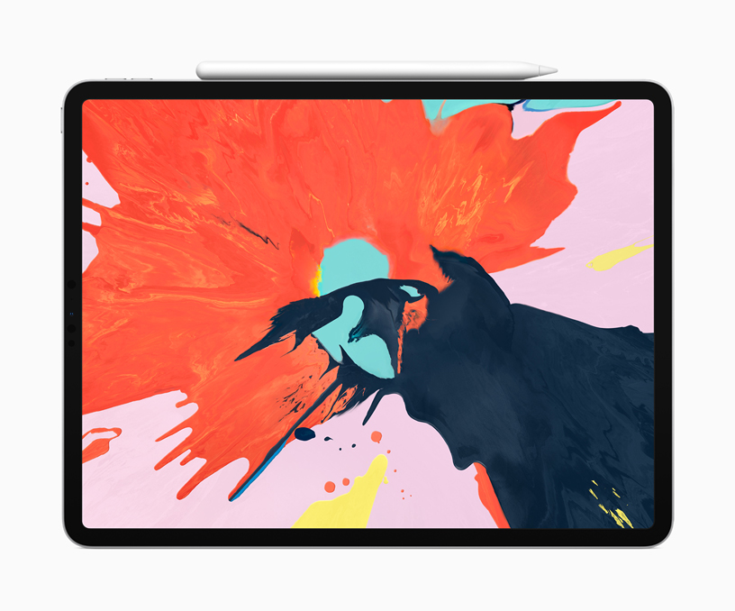
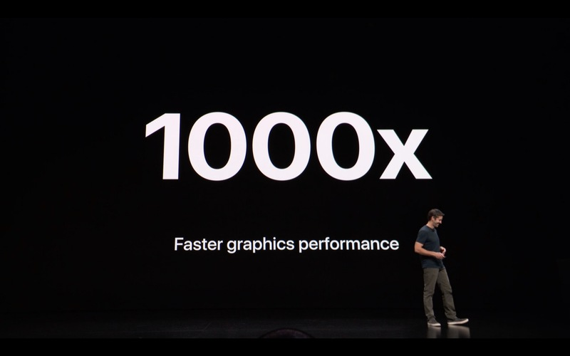

Why you should not ditch your Mac for an iPad Pro for development... yet

The Apple event this week revealed a slew of new hardware including beloved Macs that were overdue for refreshes and of course the new generation iPad Pro that many of us have been eagerly looking forward to. The 2018 iPad Pro is without a doubt a very powerful machine clearly aimed at professionals with demanding use cases; with performance rivaling and exceeding that of most computers all in a light, neat, and portable form factor, it really begs the question: is the iPad capable of dethroning the laptop as the ultimate mobile productivity device?
I've been working exclusively on my 2nd generation iPad Pro for the past couple of months, and with the excitement around the newly announced iPad Pro a number of people have been asking me why I work this way, whether it's worth it, and how I'm able to make it work. I feel like it's abundantly clear that Apple is intentionally blurring the boundaries of what is possible between their Macs and the iPad Pro, and they've clearly been successful in stirring up people's thoughts and discussions around this.
I'd like to share my take on this, based on my experience fully embracing the iPad, and hopefully this will help you decide whether this is something you would like to explore. There are already a number of very good articles that talk about the "how" of switching to an iPad based setup; I will instead focus on the "why" of switching. My experiences are also from the perspective of a software engineer working mostly on backend technologies (currently building Kubernetes on DigitalOcean, so my concerns and priorities may not be the same as yours.
Do you really need it?
It's really easy to get pulled into all the hype that's been building around the new iPad Pros, their capabilities, and the idea of being able to play with a shiny new toy. Sometimes, it's hard to rationalize these decisions, and we start finding solutions to problems that never really existed so that we can justify making an expensive purchase for something shiny and new that we want. We've all been there…
If you are seriously considering replacing your Mac with an new iPad Pro, the most important question you should be asking yourself is:
What you are trying to solve by making the switch?
It sounds silly, but I think it's extremely important. The iPad Pro is not a silver bullet that will instantly make you more productive, or make your workflows better. Sure, being able to use the Apple Pencil for note taking and diagraming sounds amazing and opens the door to new possibilities, but that will get old and lose its novelty very quickly. In its place, the reality of being in a world where iOS first (let alone iPad first) interactions are not at all common will creep up on you, and you'll be faced with more frustration than you ever had before.
It's not ready yet

Does it sound like I'm exaggerating? Let me ask you this, does your company use self hosted JIRA (or other Atlassian tools)? Have you tried to use them on iOS Safari? Case in point. Many, many things we use and take for granted don't have iOS native applications (in this case JIRA cloud does, but self hosted JIRA does not; they've been working on it for very long time and probably will continue to work on it even longer). Even if sites provide what seems like a decent or usable web interface on the Mac, chances are when you try to use them on iOS Safari, you'll get a gimped mobile version that requires you to toggle back the "Desktop experience" each time, or you end up with a site where something as simple as scrolling doesn't behave correctly.
Do you remap caps lock to another key? Maybe control? Guess what's not possible on iOS? Apple does not expose a way to remap the caps lock key, nor does it offer a way to programmatically trigger a caps locks keypress event. So all those readline/emacs control based hotkeys for navigating text fields that you've grown super accustomed to? You can't use caps lock to use them. Instead your muscle memory will cause you to trigger actual caps lock more times a day than you can keep track of. Sure there are apps that try to hack around this limitation by tracking capitalization state changes (kudos blinksh for trying), but that's limited to the specific app, and because they can't disable caps lock programmatically, if you switch to another app, there's a good chance caps lock is toggled from the last time you used it for another key.
How often do you share code or text snippets on Slack? Sorry, iOS Slack just doesn't support it.
Are you willing to spend money on a monthly basis on a vm instance in the cloud just so you can have parity when it comes to having a working development environment? It's also important to realize that depending on how powerful of a machine you want, the price can range from $5 (a cup of coffee) a month to $1000+ (a new laptop) a month.
Frustrations like this are plentiful, and in my opinion, putting up with them and working around them is only something that's worth it if you have real reasons why switching to an iPad based setup is the better solution. If it sounds like I'm trying to discourage you from ditching your Mac for an iPad Pro, you're right. I personally don't think the iPad Pro is ready yet for software development if you're not willing invest a lot of time building/improving custom workflows, and not willing to deal with real frustrations. The raw power and capabilities are there, and I think there is a real future where the iPad Pro can become a very powerful development machine, but not yet. At the moment, it will require some serious tough love and care to really make it useful and to be able to take advantage of it.
But…
If that doesn't deter you, you're in for a treat because from my experience, there are some magical things about an iPad based setup that just cannot be replicated with a Mac.

Why bother then?
If you've read this far, you probably have strong reasons for wanting to try the iPad setup. Here's my story of what my real reasons were, and why I bothered to go down this route. Maybe these frustrations and sentiments also speak to you.
My fully specced 13" Macbook Pro topped out at 16GB of memory (only the most recent top end 15" spec can be upgraded to 32GB). I work daily on Kubernetes and I also rely heavily on tooling that's based on docker containers. Running Docker for Mac, minikube (or replacing minikube with Kubernetes that now comes with Docker for Mac), Slack, and a healthy number of browser tabs typically gets me quite close to fully using all available physical memory. Whenever I cross over into swapping territory, it's a huge pain to have to find ways to free up memory while at the same time fighting an unresponsive system; it's frustrating and really disrupts my workflow. I was committed so solving this.
Apple advertises full day battery life on their Macbook Pros, but how many hours do you think a 13" Macbook Pro offers while running the aforementioned dependencies? I was usually scrambling to find power after about 3 hours tops. As someone that works remotely and enjoys the freedom and flexibility of being able to hop around coffee shops, work outside in a park, and not have location limit me, having only 3 hours of mobility before needing to find a power plug was something I wanted to solve.
The computer is the one thing I spend the most amount of time using. I use it for work, I use it for side projects, I use it for entertainment; because I spend so much time I always opt for the fully specced models, because I feel like I am able to justify the cost due to the amount of time I spend using it and the amount of value I get out if it. The problem with a custom specced model though is that replacing it is non-trivial and usually takes a few weeks. Earlier this year in June, there was an unfortunate accident where a big mug of tea was spilled on my Macbook Pro, and it stopped working. This happened to be during a large push at work, and being left without a computer for an extended period of time was just not acceptable. Thankfully, I was able to get my Macbook Pro booting and usable after about a day and a half of various attempts to dry it out, but this left me with a very important lesson learned: I need to be able to easily and quickly replace my device and not have it impact my productivity.
Working at a cloud provider has it perks, and my immediate thought was to just move my entire development environment into the cloud. I would be able to solve my memory limitation by running a larger instance, I'd be able to solve my battery life issue because now all the heavy lifting happens in the cloud and all I would have to do locally is maintain a ssh connection, and it also addresses my need of being able to quickly replace my devices and not lose productivity.
I already had a 12.9" 2nd generation iPad Pro, so I figured why not give this this idea a try on it. It's now been more than 4 months since I've started doing this, and I haven't had to even turn on my Macbook Pro in 2 months.
I bet many of you are thinking "can't you just use a cheap and replaceable laptop and achieve the same thing?". My answer to that is yes and no. At the time it was simple pragmatism and not wanting to spend more money on another device that led me to using my iPad Pro. Yes, the core part of the setup is the ssh connection (through mosh because latency is real) and pretty much any laptop can provide that, but no because after using the iPad Pro as my daily driver, I've realized that it has so many benefits that a Macbook or any laptop simply cannot compete with. Here are just a few of the many things I've grown to love about the iPad Pro.
Freedom
One feature that hasn't caught on in the world of laptops is cellular capabilities. I remember back in the day when my go to laptops were the Thinkpad x200 series; they made it possible to add a WWAN card to let you access the internet through a cellular signal, but it never worked smoothly, and the handoff between cellular and wifi never truly worked. Enter the iPad Pro: always connected. I've not to this day noticed a single dropped connection due to cellular/wifi handoff, and I have never had to deal with finicky coffee shop public wifi again. There was actually a day a couple weeks back when Rogers (a Canadian ISP) suffered an Ontario wide outage for about half a day; my place in Ottawa was certainly affected, but I didn't even know that it happened until a colleague mentioned that his internet was down in Waterloo due to the outage.
This type of "it just works (anywhere)" freedom is pretty amazing.
It's also a tablet with an amazing pencil
This one is pretty obvious. Being able to take notes and draw diagrams naturally and quickly is something you just can't do on a laptop. I love it.
Graphics performance

One thing I didn't think I'd appreciate as much is the much better graphics performance the iPad Pro has over the integrated Intel chips in the 13" Macbook Pros. I don't play very many games these days, so I didn't expect it to really matter, but here's some food for thought… How annoyed are you by slow or choppy rendering in your terminal? I bet many of you have switched to Alacritty, iTerm2 beta/nightly, or some other gpu accelerated terminal to get back that buttery smooth terminal performance. Have you noticed the hit on your battery life from doing this? iTerm2 even implements interesting features like disabling their Metal renderer unless you are plugged in to power, and to swap between the Metal and their normal renderer based on activity to reduce power consumption.
I use blinksh on my iPad Pro, it uses hterm.js (yup a DOM based js terminal), and it renders smoother and faster than iTerm2 with its gpu accelerated Metal renderer. All without a noticeable hit on battery life.
Instant on
How fast can you go from your Mac being asleep and locked to being ready to go with your development environment in front on you? For most people the answer here is incredibly fast. That's how I felt as well on my Macbook Pro. But it's even faster on an iPad Pro. Why? Unlocking a Macbook can be achieved by typing your password (a few seconds), waiting for your Apple Watch to auto-unlock for you (~1 second), or using the TouchBar's – in my opinion inferior – TouchID (~1 second). The iPad does all this all with 1 home button press. It takes less time and effort to unlock and have a ready to use iPad than it takes to just open the lid of a Macbook. We're talking seconds or even fractions of a second here, and that probably makes me sound like I'm grasping at straws to try and find things that the iPad Pro does marginally better, but I got used to this so quickly, and at first when I still had to use my Macbook occasionally, I found myself getting impatient every time.
It's going to happen, one day
A tablet with the features and performance of the iPad Pro opens up the door to many new ways of doing work. I don't think the time is right yet to declare the iPad Pro as the ultimate mobile productivity tool, but it's starting become a viable contender – if you're ready to invest some time and to do some outside the box thinking to deal with its shortcomings. The "desktop experience" is still the first thing the world prioritizes, and even if some embrace "mobile first", their "mobile" really refers to phones. Until the rest of the world realizes the potential of these tablets and starts building experiences with its capabilities in mind, it's hard to justify the extra effort needed to achieve feature parity with laptops for most development tasks. For some use cases the iPad Pro is hands down the better tool; if you are a digital artist, it immediately deserves your serious attention. For software development, it's possible, depending on the type of stuff you work on, and how willing you are to make it work.
If you do decide it's worth it though, I promise you that you will have some very rewarding moments.